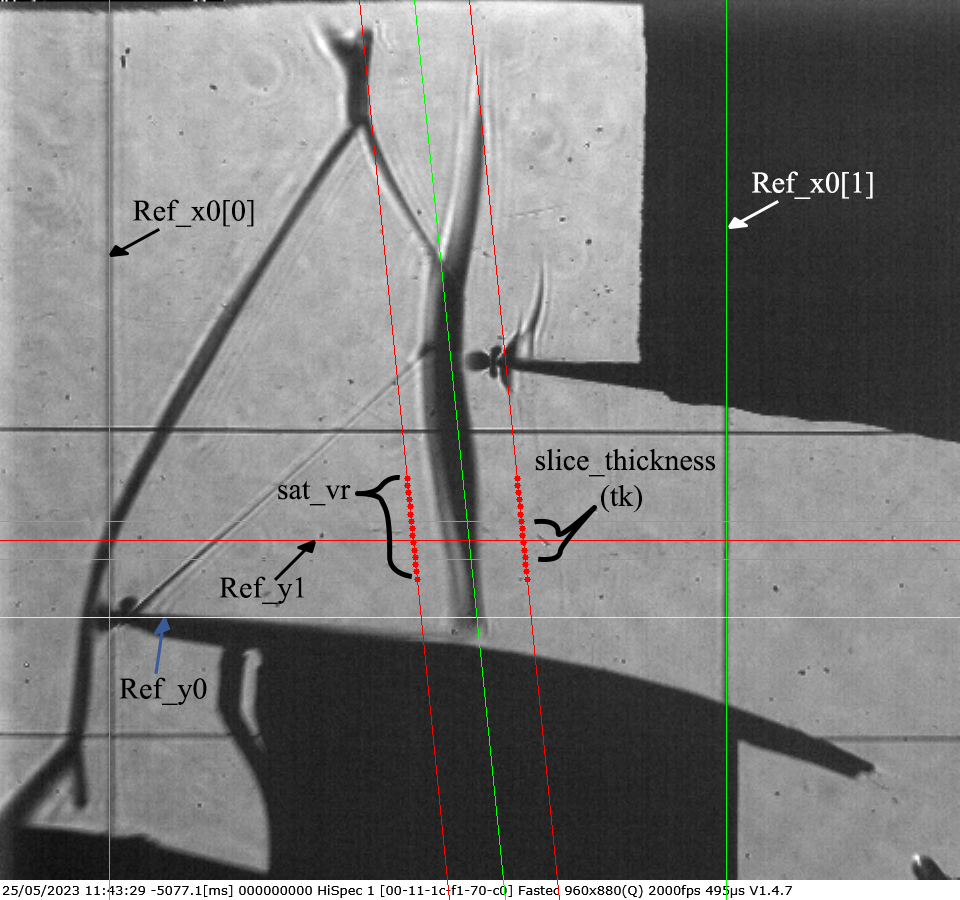
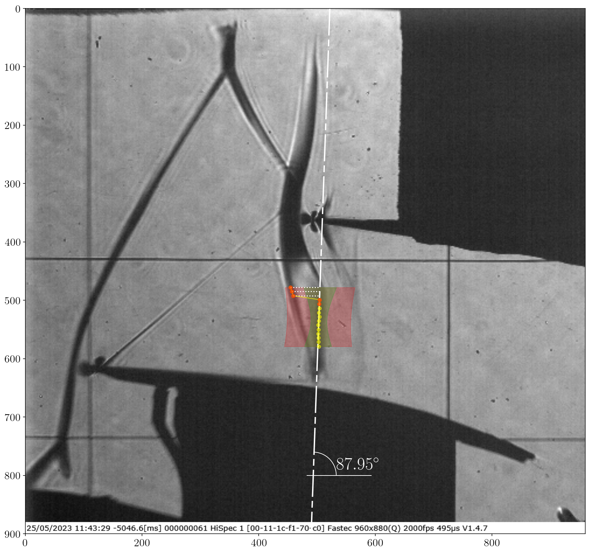
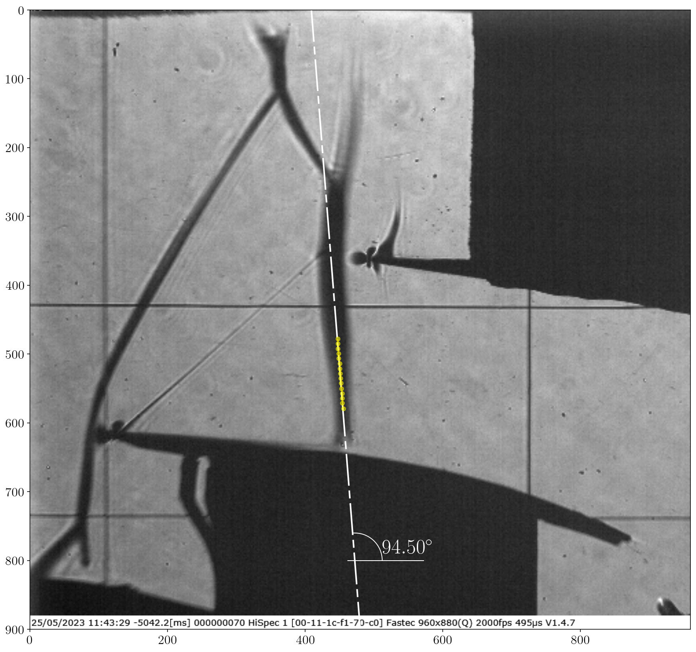
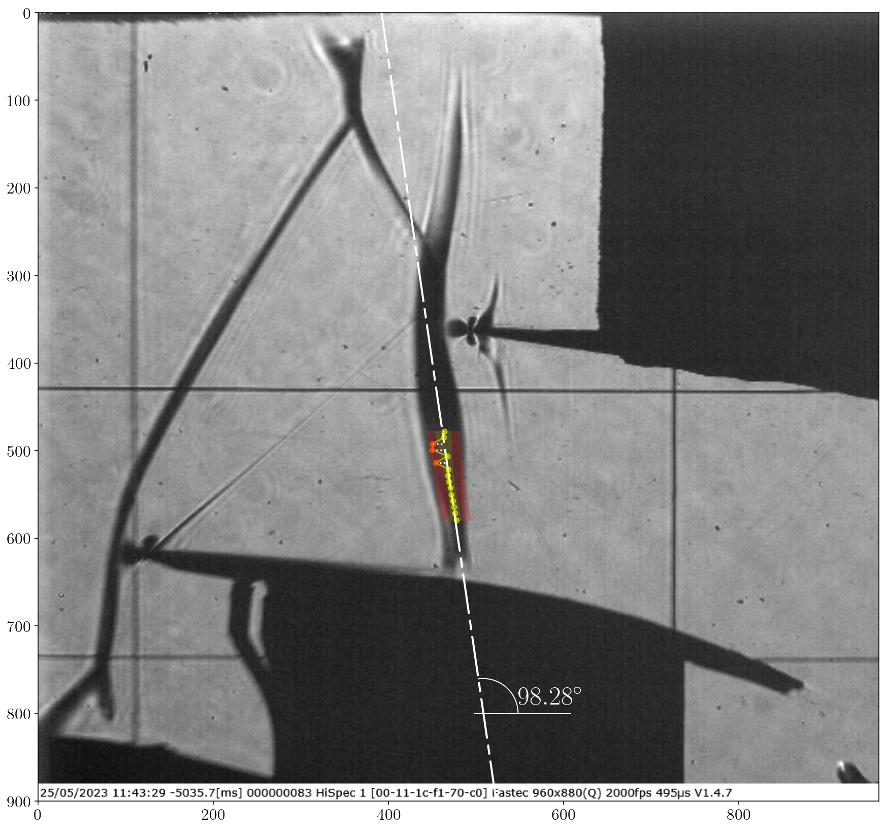
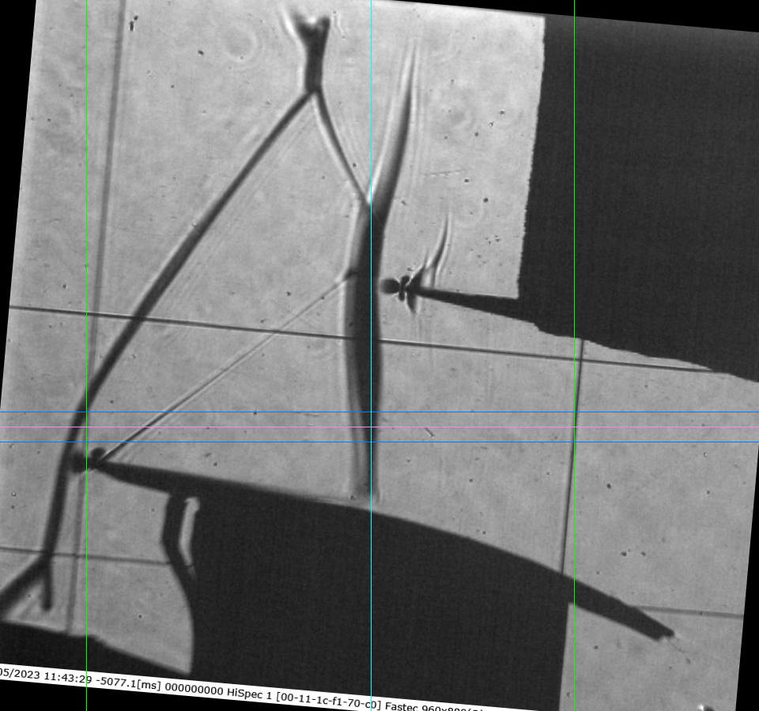
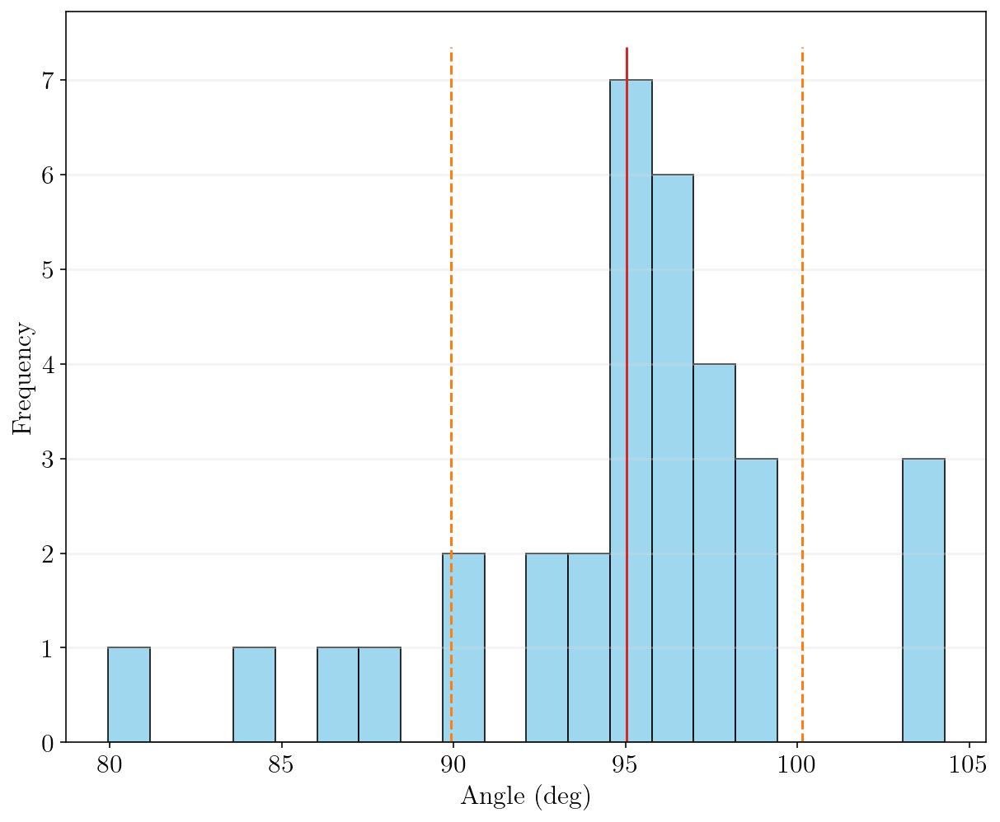
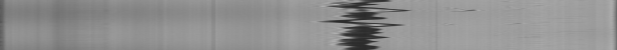

Confidance limits
When dealing with thousands of images featuring dynamically behaving shocks, achieving accurate tracking can be tough, especially if the shock contrast is low or it’s not perfectly aligned.
That’s where the SliceListGenerator.GenerateSlicesArray function comes in.
(A detailed methodology for this process will be available in an upcoming publication.)
The core challenge is that relying on a single pixel row for shock tracking can lead to lost contrast.
To combat this, the SliceListGenerator.GenerateSlicesArray function employs a multi-faceted approach:
Vertical Averaging for Contrast: To boost the shock’s visibility, the function applies vertical averaging of pixel rows. This feature is activated through the attribute
slice_thickness. This process combines information from several rows around the shock area, making it stand out more effectively.Precise Angle Estimation: Shocks are not always conveniently perpendicular to the image’s horizontal axis. To ensure accurate averaging, images need to be rotated so the shock is perpendicular to the image frame. Getting this angle right is critical; errors can cause the shock to blend in, thereby reducing tracking accuracy. This angle estimation is automatically activated when
slice_thicknessis defined. However, the tracking range can be separately defined using the attributesat_vr, which stands for shock angle tracking vertical range.Robust Angle Refinement with RANSAC: To prevent misalignment from incorrect angle estimates,
SliceListGenerator.GenerateSlicesArray, employs a statistical technique called Random Sample Consensus (RANSAC).It begins by taking random samples of tracked shock points.
Then, it fits a line to these points using the
vertical least squares method.This process is repeated, iteratively maximizing the number of “inliers” (points that fit the line well), ensuring a highly robust and accurate shock angle estimation. The maximum number of RANSAC iterations (\(itr_{max}\)) is determined probabilistically.
more info. can be found
inc_tracking_support.ransacPost-Processing Evaluation: After fitting the line, its accuracy is evaluated using linear regression relations, which are activated with the attribute
conf_interval. This helps assess the scatter of the points and determines the confidence (\(z_j\)) of the estimated line. The shock’s standard deviation also provides valuable insights into its dynamics. more info. can be foundtracking_accuracy.error_analysisOutlier Elimination: For more accurate angle estimation, Tukey’s fences approach [1, 2] is utilized. This method is automatically activated when
conf_intervalis defined and is used to remove outliers, especially if they exhibit high leverage and uncertainty. more info. can be foundtracking_accuracy.IQRAveraging Shock Angles: Finally, for the entire set of images, the average shock angle is calculated. This can be done using either a simple arithmetic average (\(m\)) or a weighted average (\(m_w\)). The weighted average is particularly useful as it accounts for variations, using the inverse standard deviation of the slope at each snapshot to give more reliable estimates greater weight. more info. can be found
tracking_accuracy.compute_weighted_average
Example
Run the following code:
from ShockOscillationAnalysis import SliceListGenerator
if __name__ == '__main__':
# Define the snapshots path with glob[note the extention of imported files]
imgPath = r'test_files\raw_images\*.png'
f = 2000 # images sampling rate
D = 80 # distance in mm
output_directory = r'results\Slicelist_confidance-results'
# iniate the SliceListGenerator module
SA = SliceListGenerator(f, D)
# use GenerateSlicesArray function
ShockwaveRegion ,n ,WR, Scale = SA.GenerateSlicesArray(imgPath,
# Define the reference line locations
Ref_x0=[109, 726], Ref_y0=617,
# Define the range of images to be only imported
within_range = [50,200],
scale_pixels=True,
# as scaled tracking reference values in mm
slice_loc=10,
# to crop the slices by vertical reference line
full_img_width=False,
# in mm
slice_thickness=[5, 'mm'],
# Define shock angle tracking vertical range in mm
sat_vr=[-5, 8, 'mm'],
# Define confidence interval with 98% accuracy
conf_interval=0.98,
# number of samples to determine the average inclination
shock_angle_samples=33,
# Define the number of points to track for angle estimation
nPnts = 15,
# to preview the tracked points during angle determination
angle_samples_review=3,
# information for angle determination
inclination_est_info=[110, (474, 591), (463, 482)],
# to preview the final setup before proceeding
preview=True,
# display properties
avg_preview_mode='avg_ang',
points_opacity=0.5,
points_size=5,
# the directory where the slice list will be stored
output_directory=output_directory,
# additional comments to the stored slice list file name
comment='-SliceList',
)
Review the spacified domain and reference lines, then press Esc to abort or any other key to continue:
The software will estimate the shock angle, store the
angle_samples_reviewand preview the rotated image, press Esc to abort or any other key to continue:    Img Shape is: (900, 960, 3) Image scale: 0.12965964343598055 mm/px Slice center is located at: - 540px in absolute reference - 9.98mm (77px) from reference `Ref_y0` Shock angle tracking vertical range above the reference `Ref_y0` is: - In (mm)s from 18.02mm to 4.93mm - In pixels from 139px to 38px Shock inclination test and setup ... ✓ Warning: Requested files are out of range; Only available files will be imported from 50 to 100 Import 33 images for inclination Check ... [====================] 100% Shock inclination estimation ... Shock tracking started ... ✓ Calculating confidance limits ... ✓ weighted average shock angle: 93.79±0.109 deg, σ = 0.00083 deg Angle range variation: [79.95, 104.28], σ = 5.10 deg Average shock loc.: 469.75±6.47 px Average shock angle: 95.03±1.90 deg Plotting tracked data ... [====================] 100% Processing time: 5 Sec
{kind=link}
{kind=link}
{kind=link}
{kind=link}
{kind=link}
{kind=link}
Note
In the first and third images, red uncertain points significantly deviate from the actual shock location due to the complexity of the shock structure. However, the algorithm successfully identified and excluded these outliers, focusing instead on the correct shock angle.
These uncertain points can influence the arithmetic average of the shock angle. However, in the weighted average approach, images like the first and third—which exhibit high standard deviation—are assigned lower weights compared to the second image. This results in a more reliable average estimation.
The standard deviation for arithmetic average are notably higher than the weighted average, indicating greater variability and lower confidence. This difference is also reflected in the overall confidence level of the result.
A log.txt file is generated in the results directory. It contains details about the tracking process and the operations performed.
The software will generate the slice list and store the data:
RotatedImage: stored ✓ DomainImage: stored ✓ working range is: {'Ref_x0': [109, 726], 'Ref_y1': 540, 'avg_shock_angle': array([95.03081317, 1.90169604, 93.79126163, 0.10905212, 5.10271056]), 'avg_shock_loc': array([469.7515693 , 6.47399096, 17.37128401])} Importing 50 images ... [=================== ] 98% ImageList write: Image list was stored at: results\Slicelist_confidance-results\2.0kHz_10mm_0.12965964343598055mm-px_tk_38px_-SliceList.png
{kind=link}